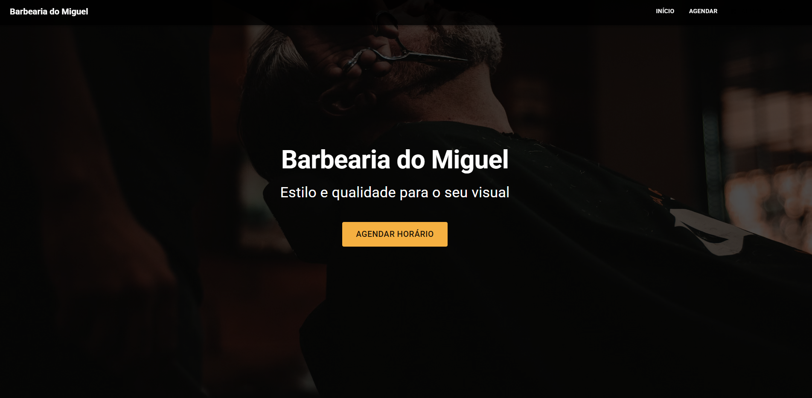
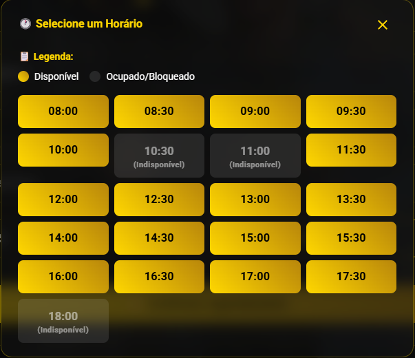
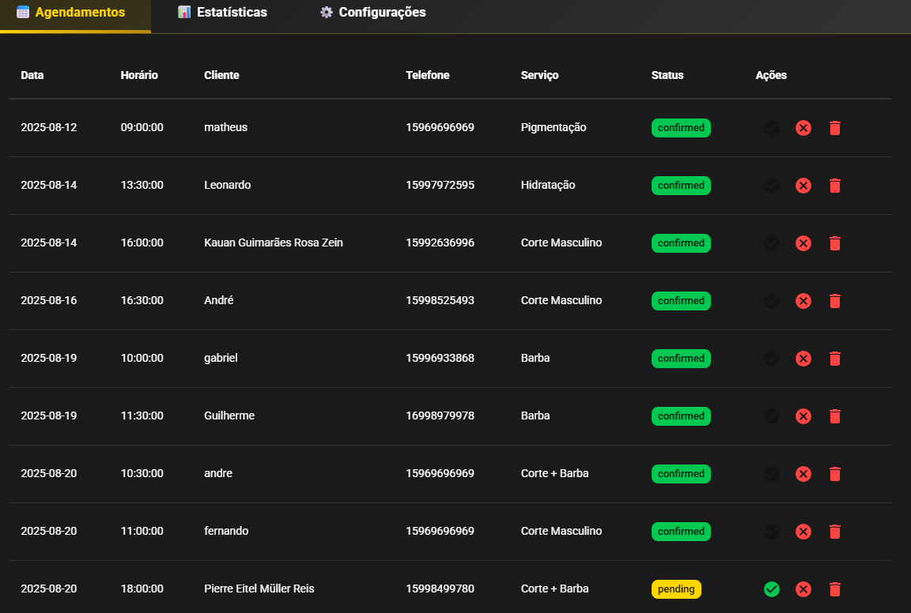
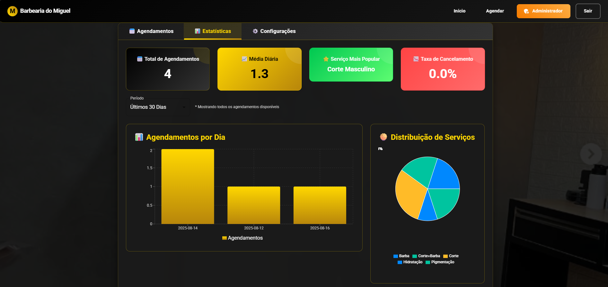
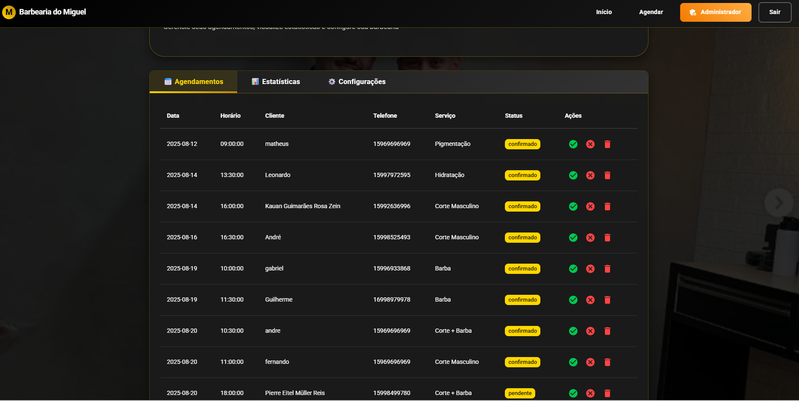
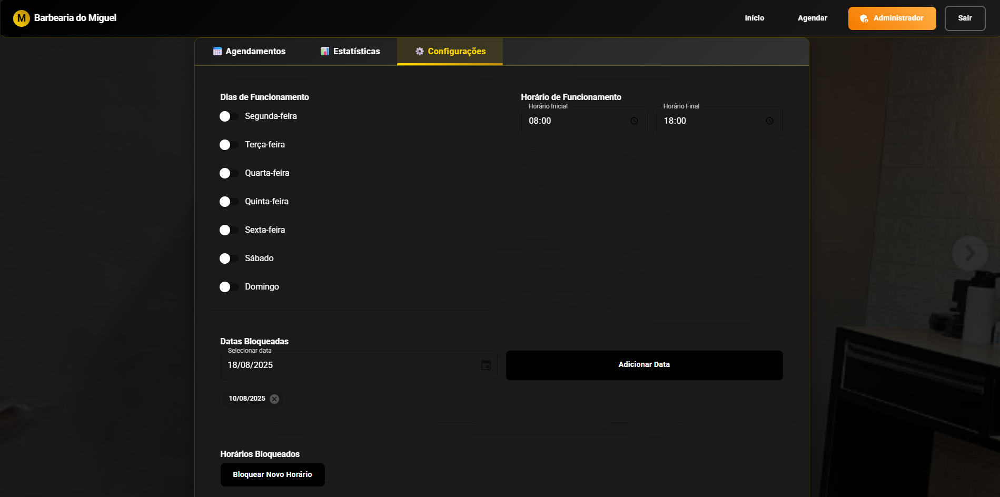

Web App
Barbearia
Sistema de agendamento com painel administrativo, disponibilidade em tempo real e integracao com WhatsApp.
Painel admin
Pacotes de servico
Bloqueio de horarios
Case rapido
- Problema: agendamentos manuais e pouco controle de horarios.
- Solucao: painel completo com disponibilidade em tempo real.
- Impacto: fluxo mais rapido e organizado para clientes e equipe.